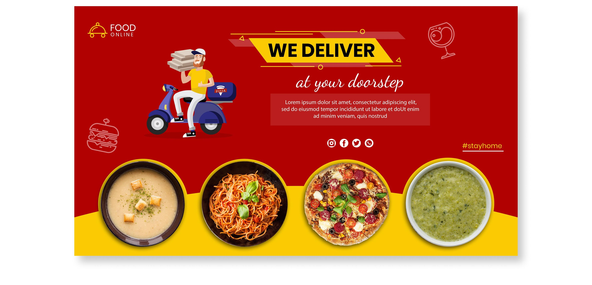

I was assigned a project by a tech company responsible for an online delivery app. Their raw data was provided to me for quarterly checks.I used Python to clean the data and perform exploratory analysis to uncover insights crucial for the app's success.Utilizing Python, I analyzed the data to address specific questions aimed at ensuring the app's effective and smooth functioning.Through data cleaning and exploratory analysis, I provided insights that aided in decision-making, enhancing the app's capabilities and contributing to the company's success.

During my internship at Psyliq, I was assigned to perform data mining using SQL to help the organization identify areas for improvement and make data-driven decisions.Utilizing SQL, I made queries across various tables/databases and analyzed HR data provided to me.By extracting and analyzing data, I provided insights to the HR department, enabling them to optimize processes, reduce costs, predict future trends, and anticipate potential issues. The insights facilitated proactive measures, enhancing efficiency and effectiveness within the HR department of the organization

This is an ongoing personal project involving a code for scrapping and populating database for JSE ticker information for data analysis.
As part of my project at Psyliq, I conducted exploratory pharmaceutical data analysis for five countries using data provided.Using SQL, I accessed multiple pharmaceutical databases to write queries for analyzing sales, profits, revenue, customer satisfaction, and supply chain optimization across these countries.By leveraging SQL queries, I gained insights into sales, profits, revenue, customer satisfaction, and supply chain efficiency, aiding in cost reduction and expediting clinical trials through improved customer satisfaction and site selection identification.The insights gleaned significantly contributed to cost reduction and accelerated clinical trials by optimizing customer satisfaction and site selection identification within the pharmaceutical domain.

This was a USAID donor funded project to explore the factors inhibiting children birth registration in selected FACT Consortium under children Tariro project.
Visualisations of HR data analytics and Pharmaceutical Data